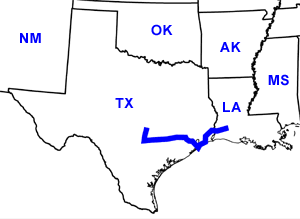

Day Eleven
Lake Charles, LA- Austin, TX
Date: 06/21/2002
Distance: 430 miles
Weather: Mostly sunny, 90's. Occasional down pours.
Into Texas... We stopped at the world's nicest Welcome Center. To rest our "tired dogs." We declined to take the nature walk behind the building or sample some of their fine cavier.
Taking a long drive through the Lone Star state we first headed toward Galvaston, which is on the sea shore. A fun trip on the the ferry to Galveston brought us into an overcrowded shore town, and the State Park did not live up to expectations.
So, off we went to the North and onto Austin to visit John. But puttering along the highway a loud pop could be heard which was not, unmistakingly, but indeed, a flat tire! Pulling over at the rest stop we (okay mostly Jared) proceeded to switch the flat with the spare. And despite heavy rains we were back on the road again.
We arrived in Austin toward the beginning of the next day. But we were rewarded with a great night's sleep courtsey of John's wonderful hospitality.